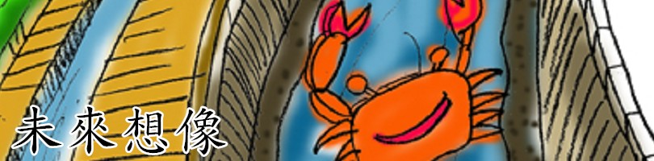
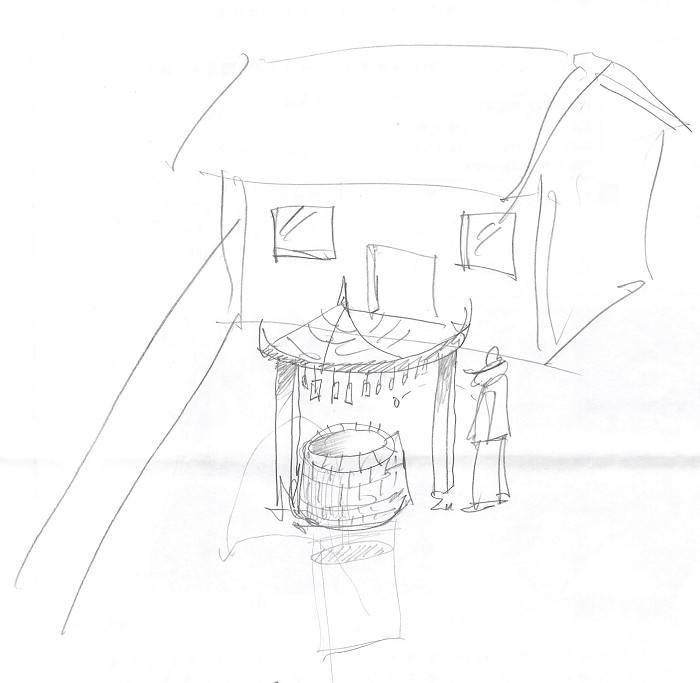
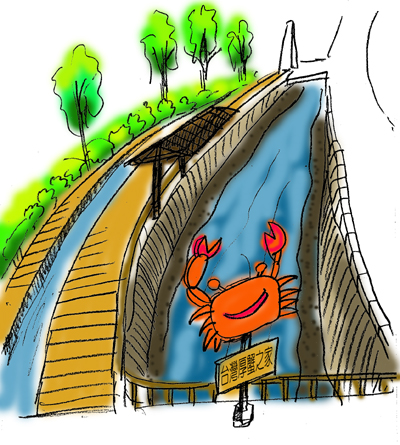

在溝內社區中，社區人士們都有很多的夢，他們都希望改造社區，使社區變得更好，其實，大家都如此盼望著，下表中市社區人士許家銘先生所提供的資料，希望...夢想有一天能夠成真！

未來計畫： 左圖，是已封閉的的古井經過一翻改造後，所呈現的風貌。將原本枯竭的古井，改造成極受歡迎的許願井，上頭再加蓋亭子，吊掛著竹片、木片，謝謝寫上自己的心 願，將硬幣投入井中，自己的願望就能實現，井水中的硬幣也能當作公帑，改造社區，使社區更加美好。

未來計畫： 此圖是溝內村的某條溝渠，此溝渠在鹹水(海水)以及淡水的交界處，因此適合台灣厚蟹生活。如果在溝渠兩側加築河堤，加上木筏步道，再築個小亭子，人們就可以來參觀，並觀察生態，親近大自然。
<--回溝內村首頁